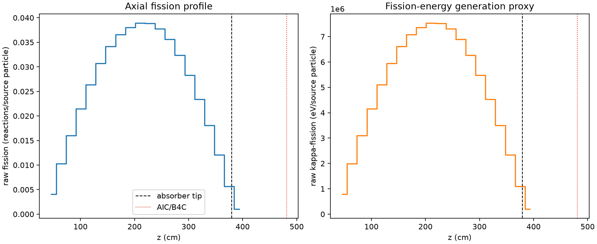
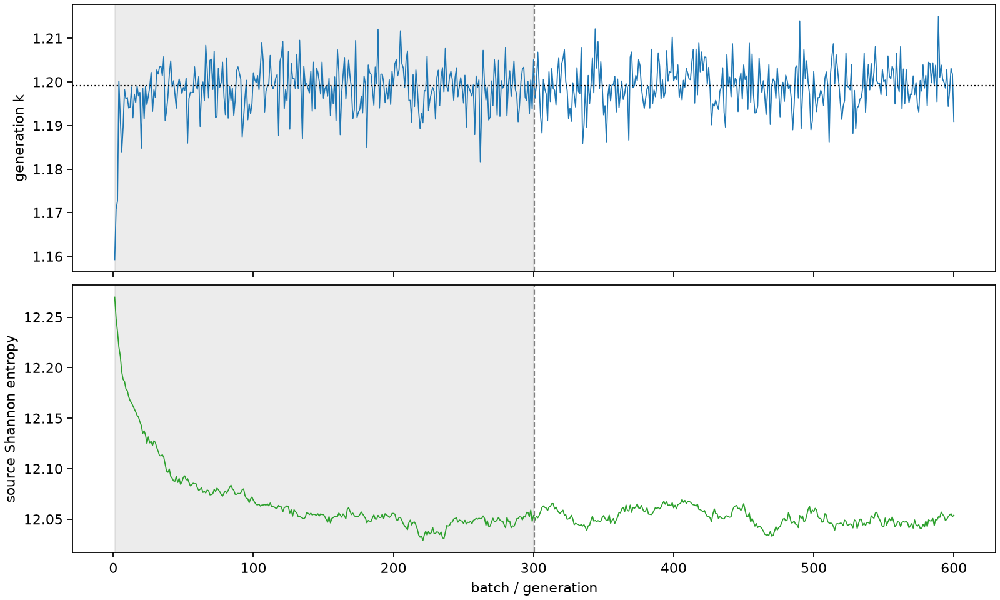

| field | value |
|---|---|
| experiment | V2-STAGE_128_OGRENCI_01-0008 |
| k | 1.1991524712787112 |
| MC standard error | 0.00018247519136233554 |
| seconds | 947.4647512819938 |
| acceptance | not_assessed |
| convergence | review_required |
Completed is output integrity only; physical and statistical review required. Zero tallies do not prove zero production or zero uncertainty.
| diagnostic | value |
|---|---|
| geometric fuel voxels | 5280 |
| zero fission tally voxels | 0 |
| low signal fuel voxels | 0 |
| low signal fission share | 0.0 |
| low signal kappa share | 0.0 |
| important fission share | 0.9500549474849465 |
| previous filter included | 5280 |
| duration estimate s | 1562.5173488400023 |
| actual minus estimate s | -615.0525975580085 |
| fission relative MC error | statistics |
|---|---|
| all_geometric_fuel | {"voxels": 5280, "positive_mean_voxels": 5280, "zero_mean_voxels": 0, "undefined_relative_error_voxels": 0, "median": 0.010876826327962708, "p95": 0.035776663605516595, "maximum": 0.06392694776254092} |
| low_signal | {"voxels": 0, "positive_mean_voxels": 0, "zero_mean_voxels": 0, "undefined_relative_error_voxels": 0, "median": null, "p95": null, "maximum": null} |
| important_95pct | {"voxels": 4145, "positive_mean_voxels": 4145, "zero_mean_voxels": 0, "undefined_relative_error_voxels": 0, "median": 0.010145295791154169, "p95": 0.015190651131889053, "maximum": 0.018806316045116893} |
| outside_previous_filter | {"voxels": 0, "positive_mean_voxels": 0, "zero_mean_voxels": 0, "undefined_relative_error_voxels": 0, "median": null, "p95": null, "maximum": null} |
| kappa_fission relative MC error | statistics |
|---|---|
| all_geometric_fuel | {"voxels": 5280, "positive_mean_voxels": 5280, "zero_mean_voxels": 0, "undefined_relative_error_voxels": 0, "median": 0.010864216099217179, "p95": 0.035737978768260806, "maximum": 0.06385680123771831} |
| low_signal | {"voxels": 0, "positive_mean_voxels": 0, "zero_mean_voxels": 0, "undefined_relative_error_voxels": 0, "median": null, "p95": null, "maximum": null} |
| important_95pct | {"voxels": 4145, "positive_mean_voxels": 4145, "zero_mean_voxels": 0, "undefined_relative_error_voxels": 0, "median": 0.010133538210949216, "p95": 0.015173378059498543, "maximum": 0.018785926077473585} |
| outside_previous_filter | {"voxels": 0, "positive_mean_voxels": 0, "zero_mean_voxels": 0, "undefined_relative_error_voxels": 0, "median": null, "p95": null, "maximum": null} |
| axial bin | fission share | kappa-fission share |
|---|---|---|
| 1 | 0.00825515018740413 | 0.008255508923496867 |
| 2 | 0.020937827698973236 | 0.020937752981180342 |
| 3 | 0.03266479637437982 | 0.03266493059224527 |
| 4 | 0.04385425270284097 | 0.04385427213799332 |
| 5 | 0.053874555738855266 | 0.0538746177771097 |
| 6 | 0.06267414606756766 | 0.0626741011734493 |
| 7 | 0.06981517988422702 | 0.06981494889738996 |
| 8 | 0.07471606419754082 | 0.07471569277333209 |
| 9 | 0.07767500817326743 | 0.07767481481166824 |
| 10 | 0.07942350035722849 | 0.07942340964881195 |
| 11 | 0.07932707973489926 | 0.0793269200329394 |
| 12 | 0.07706018950037975 | 0.07706010672818807 |
| 13 | 0.07272807312492058 | 0.07272802276484001 |
| 14 | 0.06606411506166432 | 0.06606410438424924 |
| 15 | 0.05783321376678318 | 0.057832944428881136 |
| 16 | 0.047816653797319406 | 0.047816623314561685 |
| 17 | 0.03688435948273363 | 0.03688423432465775 |
| 18 | 0.024723031117675036 | 0.02472300464867821 |
| 19 | 0.011553407338474526 | 0.011553856051716018 |
| 20 | 0.0021193956928655462 | 0.0021201336046115966 |
Histories include the inactive-to-active transition at batch 300. kappa-fission approximates fission energy production, not total heat deposition.

